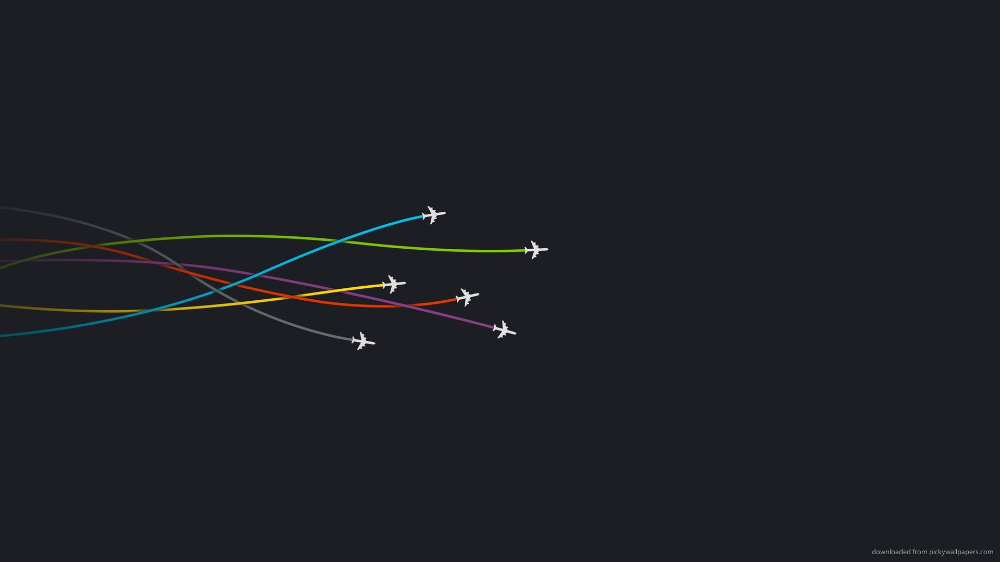
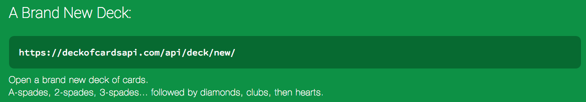
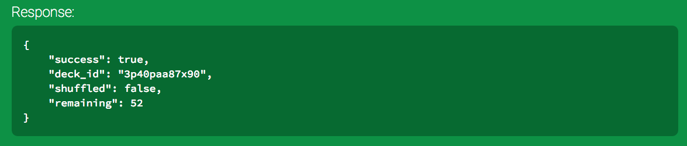

Using Interactive Methods
How to use the API Methods
The Deck of Cards API provides several useful methods for creating decks to use. The first we will examine is the "brand new deck" method. Which specifies the request should be in the following format:

This method requests that the API server create a new deck for us to use. The server will process the request and then issue a response in the following format.

But first we will examine how we send this request, which can be done with the following code: